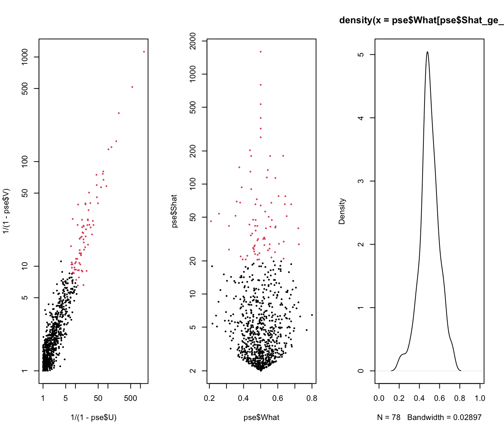

13 Multivariate Extreme Value Theory
13.1 Pseudo-Polar Transforms
Kiriliouk et al. (2016) describe a pseudo-polar representation of bivariate data as a means to explore right-tail extremal dependency between the variables.
Let \((X_i, Y_i)\) (real values) or \((U_i, V_i)\) (as probabilities) for \(i=1,\ldots, n\) be a bivariate sample of size \(n\). When such data are transformed into a unit-Pareto scale by \[
\hat{X}_i^{*} = \frac{n}{n+1-R_{X,i}}, \quad{} \hat{Y}_i^{*} = \frac{n}{n+1-R_{Y,i}},
\] where \(R\) is rank(), then letting each component sum or pseudo-polar radius be defined as \[
\hat{S}_i = \hat{X}_i^{*} + \hat{Y}_i^{*},
\] and each respective pseudo-polar angle be defined as \[
\hat{W}_i = \frac{\hat{X}_i^{*}}{\hat{X}_i^{*} + \hat{Y}_i^{*}} = \frac{\hat{X}_i^{*}}{\hat{S}_i}
\] a pseudo-polar representation is available for study.
A scatter plot of \(\hat{W}_i\) (horizontal) versus \(\hat{S}_i\) (vertical) will depict a pseudo-polar plot of the data.
A density plot of the \(\hat{W}_i\) is a representation of extremal dependence.
13.2 Clustering Methods in Extremes
Handbook on Statistics of Extremes 책 발간 예정
Vector quantization
13.2.1 K-means clustering
Given obs \(\pmb{x}_1, \ldots, \pmb{x}_n\), find \(K\) cluster centroids \(\pmb{c}_1, \ldots, \pmb{c}_K\) s.t. the avg data-point-to-centroid dist is minimized: \[ (\pmb{c}_1, \ldots, \pmb{c}_K) := \arg\min_{\pmb{c}_1, \ldots, \pmb{c}_K} \sum_{k=1}^K \]
Estimate the centroids \(\pmb{c}_k\) and the cluster membership of each \(\pmb{x}_i\) in turns.
- Given \(\hat{\pmb{c}}_1, \ldots, \hat{\pmb{c}}_K\), assign \(\pmb{x}_i\) to the cluster \(k\) with the closest centroid \(\hat{\pmb{c}}_k\). \[ i \in C_k \Longleftrightarrow d(\pmb{x}_i, c_k) = \min_{k'}d(\pmb{x}_i, \pmb{c}_{k'}) \]
- Given all \(\pmb{x}_i\)’s in cluster \(k\), update each \(\hat{\pmb{c}}_k\)
Q. Choice of \(d(\cdot, \cdot)\): + Euclidean \(d(\pmb{x}, \pmb{y}) = (\pmb{x}- \pmb{y})^T(\pmb{x}- \pmb{y})\) + Then the centroids can be calculated as \[ \hat{\pmb{c}}_k = \arg\min_{\pmb{c}} \sum_{i\in C_k}(\pmb{x}_i - \pmb{c})^T(\pmb{x}_i - \pmb{c}) = \frac{1}{|C_k|} \sum_{i\in C_k} \]
Q. Choice of \(K\): + Prespecified + Use a scree plot where the obj fct \[ \min_{\pmb{c}_1, \ldots, \pmb{c}_K} \sum_{k=1}^K \sum_{i \in C_k} d(\pmb{x}_i , \pmb{c}_k) \]
이러한 \(K\)-mean 같이 Euclidean dist를 쓰는 방법은 extreme value에서 통하기 어려움
13.3 Spectral Clustering
Can detect nonlinear cluster patterns
Can identify noise clusters
13.4 Clustering the Angluar Components
\(\pmb{Y}\) be multivariate regularly varying with standardized margin (Frechet 등이 해당) Then \[ \frac{\pmb{Y}}{\|\pmb{Y}\|}_{\| \pmb{Y}\|>t}\stackrel{d}{\rightarrow} \Theta, \quad{} t \rightarrow \infty. \]
Clustering for extremes:
- Obtain angular compts \(\Theta_1, \ldots, \Theta_{k_n}\) from \(\pmb{Y}_1, \ldots , \pmb{Y}_n\)
- Cluster \(\Theta_1, \ldots, \Theta_{k_n}\) instead.
여기서 \(\Theta\)는 unit sphere \(\{ \pmb{x} \| \pmb{x} \| = 1\}\)이라는 매우 좋은 space에 놓여 있다. (이때 \(\| \cdot \|\)은 any norm이나 되지만 \(L2\) norm을 쓰기로 한다)
13.5 Max-Linear Models
Max-linear random vector: \[ \pmb{X} = (X_1, \ldots, X_d) = \vee_{i=1, \ldots, K}\pmb{b}_i Z_i \]
Factors \(\pmb{b}_1, \ldots, \pmb{b}_{K} \in [ 0, \infty )^{d}\)
\(Z_1, \ldots, Z_k\): i.i.d. Frechet
Then the angular measure \(\Theta\) consists of point masses at \[ \frac{\pmb{b}_1}{\|\pmb{b}_1\|}, \ldots \]
13.5.1 Spherical \(K\)-means
- Apply to \(\Theta_1, \ldots, \Theta_{k_n}\): \(K\)-means clustering with choice of distance \[ d(\pmb{x}, \pmb{y}) = 1- \cos (\pmb{x}, \pmb{y}) \]
On the unit sphere \(\mathbb{S}_{+}^{d-1}\),
- \(d(\pmb{x}, \pmb{y})= 1-\pmb{x}^T\pmb{y}\)
- \(d\) is equiv to the Euclidean dist
13.5.2 Spherical \(K\)-PCs clustering for extremes
앞선 방법과 달리 \(d(\pmb{x}, \pmb{y}) = 1-(\pmb{x}^T\pmb{y})^2\)을 쓰는 것이 차이점(제곱이 들어감)
https://academic.oup.com/biomet/article-abstract/110/1/135/6551983?redirectedFrom=PDF
\(\arg\max_{\|\pmb{c}\|_2=1} \pmb{c}^T\Sigma_k \pmb{c}\) 형태가 나옴
For any spectral measure that can be decomposed into two sub-faces \(l_1\) and \(l_2\), we would like the optimal centroids to satisfy \[ \pmb{c}_1 \in \mathbb{F}_{l_1}, \quad{} \pmb{c}_2 \in \mathbb{F}_{l_2} \]
This holds for spheical \(K\)-means iff \[ \|l_1 | - | l_2 \| \leq 1 \]
This holds for spherical \(K\)-PCs always.
If angular components \(\pmb{x}\) and \(\pmb{y}\) belongs to different sub-faces, then \(\pmb{x}^T\pmb{y}\) close to \(0\).
13.5.3 Spectral clustering for extremes
- Linear factor model with noise: \[ \pmb{X} = (X_1, \ldots, X_d) = \sum_{i=1}^K \]